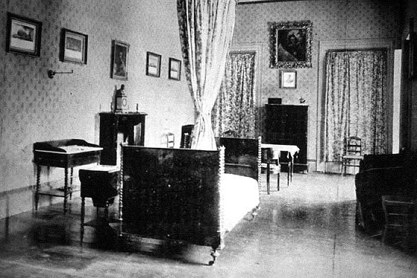

|
|  |
|
Adolfo P. Carranza, Dormitorio de San Martín en Boulogne-sur-Mer
|
Apart from San Martín's sabre –a donation from Manuela Rosas de Terrero, daughter of the once loathed dictator Juan Manuel de Rosas (another famous exile) to whom San Martín had given the weapon as a sign of approval and admiration–, the key piece of the collection was the complete furniture of the General´s bedroom and death chamber, which was reconstructed at the National Historical Museum according to photographs taken at Boulogne-sur-Mer. 'I allow myself to manifest to you –Carranza wrote to San Martín's granddaughter on arrival of the shipment– the great satisfaction experienced by the Argentine people on knowing that the last of the Great Captain's relics which had remained abroad, have finally returned to its bosom.'
|